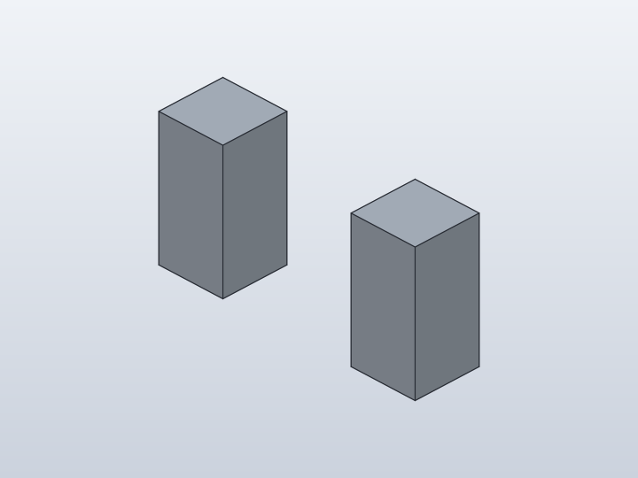
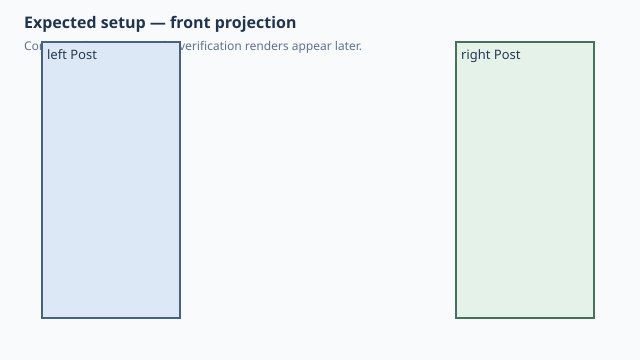
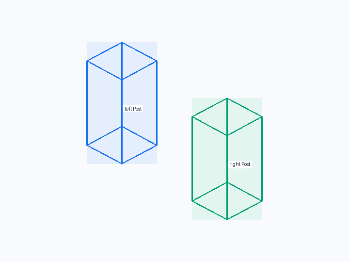
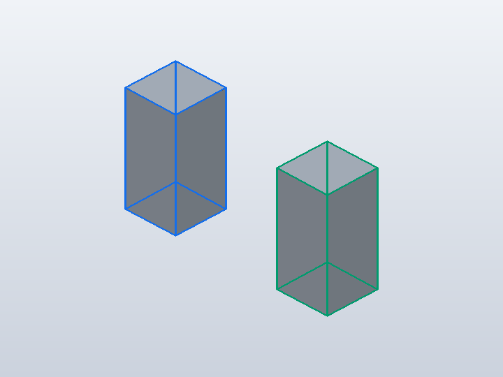
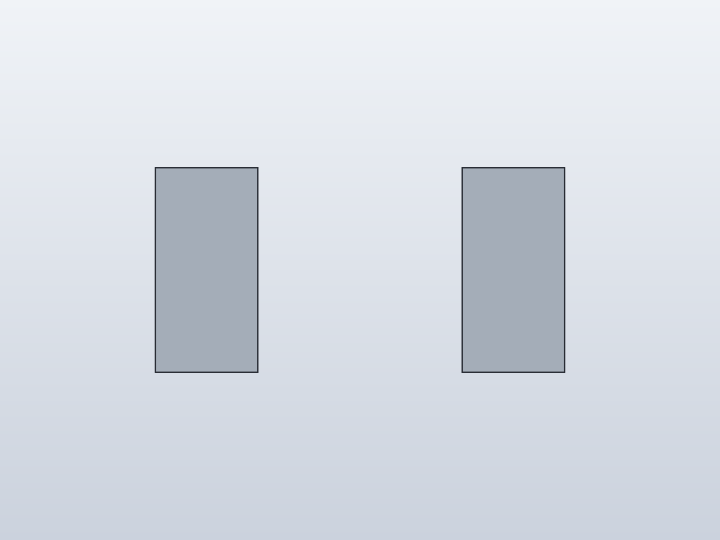
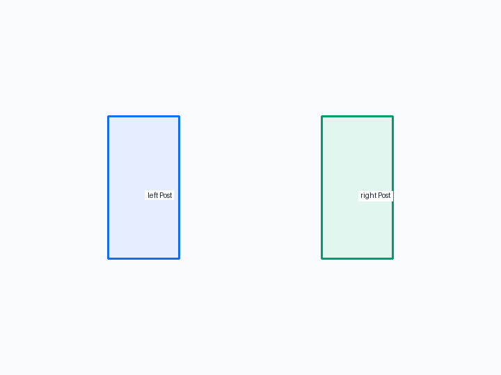
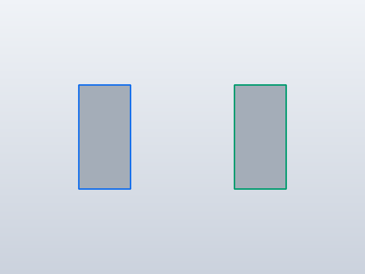
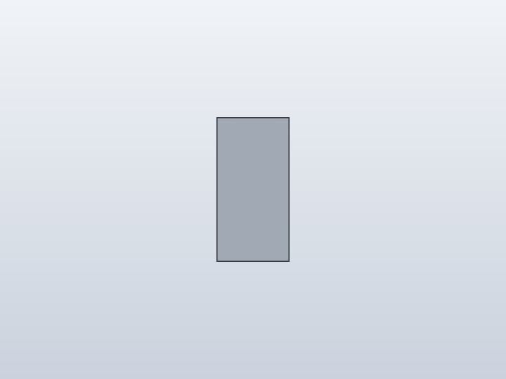
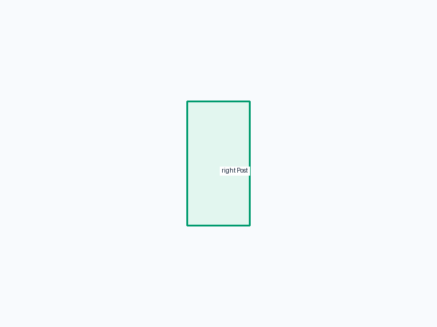

Forge qualification case
Imported @assembly subassembly

1. Test setup

Test goal
Verify the public @assembly decorator on an imported reusable subassembly, independently of anchor or feature complexity.
Pass criteria
Two identical 10 x 10 x 20 mm posts stand at X=-15 and X=+15, proving that an imported @assembly result compiles and builds as native reusable occurrences.
2. Implementation under test
Fixture source
"""Qualification: an imported @assembly compiles as a native subassembly."""
from subassembly import PostPair
class ImportedAssembly:
def build(self):
return PostPair()
ImportedAssembly()
Public Forge API used
@component class Post; @assembly class PostPair; root model imports and returns PostPair()
Forge model represented by this fixture
One reusable Post component definition plus two occurrences produced inside an imported @assembly factory. The root model treats the returned subassembly as ordinary assembly geometry.
3. Generated SolidCraft relationship
The Python-only @assembly wrapper disappears during lowering: Forge emits one Post component definition, one copied occurrence and native occurrence.move commands for the two placements.
Show generated relationship / command details
component.create
solid.box
component.activate
occurrence.copy
occurrence.move
occurrence.move4. Machine verification
Baseline · 2 bodies · measurements.json
No editable parameters in this result.
Bodies
| Body | BBox min | BBox max |
|---|---|---|
| Post | [-20, -5, 0] | [-10, 5, 20] |
| Post (Post:2) | [10, -5, 0] | [20, 5, 20] |
Semantic validation
| Status | Level | Check | Expected | Actual |
|---|---|---|---|---|
| PASS | Q4 | declared target geometry | [{"label": "left Post", "min": [-20, -5, 0], "max": [-10, 5, 20]}, {"label": "right Post", "min": [10, -5, 0], "max": [20, 5, 20]}] | [{"min": [-20.0, -5.0, 0.0], "max": [-10.0, 5.0, 20.0]}, {"min": [10.0, -5.0, 0.0], "max": [20.0, 5.0, 20.0]}] |
| PASS | Q4 | two native post bodies | 2 | 2 |
| PASS | Q4 | imported assembly placement | [[[-20, -5, 0], [-10, 5, 20]], [[10, -5, 0], [20, 5, 20]]] | [[[-20.0, -5.0, 0.0], [-10.0, 5.0, 20.0]], [[10.0, -5.0, 0.0], [20.0, 5.0, 20.0]]] |
5. Visual verification
Iso
Current SolidCraft iso view

Expected geometry in the same iso view

Expected geometry over the actual iso view
Additional front/right views
Front

Current SolidCraft front view

Expected geometry in the same front view

Expected geometry over the actual front view
Right

Current SolidCraft right view

Expected geometry in the same right view
Expected geometry over the actual right view
6. Evidence and references
Raw evidence
Show generated files and measurements
- Fixture source
- Generated command JSON
- results.json
- measurements.json
- joint-inspect.json
- model.sc
- model.step
- qualification-result.json
- validation.json
- visual-validation.json
- camera-front.json
- camera-iso.json
- camera-right.json
- Native snapshot: model.png
- Native snapshot: model-front.png
- Native snapshot: goal-front.png
- Native snapshot: overlay-front.png
- Native snapshot: visual-diff-front.png
- Native snapshot: model-right.png
- Native snapshot: goal-right.png
- Native snapshot: overlay-right.png
- Native snapshot: visual-diff-right.png
- Native snapshot: model-iso.png
- Native snapshot: goal-iso.png
- Native snapshot: overlay-iso.png
- Native snapshot: visual-diff-iso.png


Reference models
These comparisons clarify concepts; Forge does not promise API compatibility with them.
- PythonSCAD: The public Python object/decorator layer should remain natural while still producing reusable native CAD structure.
- SolidCraft: The resulting assembly must lower to native component/occurrence commands and build without special runtime handling.